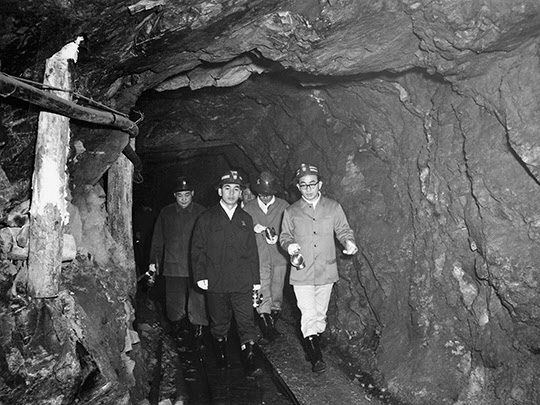
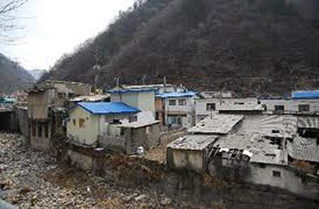
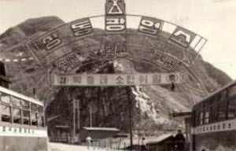

보도일 2014-10-10출처 조선일보 프리미엄조선 연재
박정희는 군대 시절부터 현장을 가장 중시했던 리더로 알려져 있다. 박태준도 현장제일주의 리더십을 철저히 실행한 최고경영자였다. 그러한 그의 특질은 대한중석 사장 시절부터 유감없이 발휘되었다.
경영지표의 각종 수치가 제대로 드러내지 못하는 대한중석의 이면을 한눈에 살펴볼 수 있는 현장은 바로 중석을 캐내는 광산이었다. 상동광산은 외형이 제법 웅장했다. ‘세계 굴지의 텅스텐 광산’이란 명성이 빈말은 아닌 모양이었다. 그러나 신임 사장의 첫눈에 비친 종업원들은 어딘가 모르게 표정이 어두워 보였다. 고된 노동을 감당해야 하는 직업적인 피로와는 다른 종류의 그 무엇이 그들을 더 피곤하게 만들고 있는 것 같았다.
박태준은 막장까지 직접 내려가겠다고 했다. 그를 수행한 임직원들은 자못 놀란 얼굴들이었다. 설마 막장까지야, 했던 예상이 보기 좋게 빗나갔다는 뜻이었다. 특히 그는 안전관리 시스템에 깊은 관심을 표명했다. 관리 매뉴얼과 실제 상태를 점검하고 그 실무책임자에게 어려운 질문들을 던졌다.
“안전관리를 소홀히 한다는 것은 동료에 대한 적대행위와 똑같은 거요. 이 점, 항상 명심하시오.”
이렇게 부단한 안전관리의 중요성을 강조하며 각성시킨 박태준은 굴착기도 꼼꼼히 살펴보았다. 스웨덴에서 들여왔다는 굴착기는 그 명성에 흠을 내지 않는 상태를 비교적 잘 유지하고 있었다.

막장 시찰을 마치고 밝은 지상으로 나온 박태준은 혼자서 고개를 갸웃거렸다. 아무리 생각해도 묘한 노릇이었다. 광산회사에서 가장 힘든 현장인 채굴의 막장이 양호해 보이는데 왜 현장 직원들의 표정에 이상한 피로감 같은 것이 어두운 그림자처럼 어른거린단 말인가? 이 의문점을 그는 반드시 풀고 싶었다.
박태준은 직원 가족들의 생활 실태에서 그 답을 찾을 수 있을 것이라고 판단했다.
“사원주택단지로 안내하시오.”
막장까지 직접 다녀온 신임 사장이 숨 돌릴 틈도 없이 명령했다. 그 목소리가 단호하여 누구도 말릴 엄두를 내지 못했다.
산기슭의 사원주택단지를 둘러보는 박태준은 숨이 막히는 듯했다. 일제 때 지은 다락집들이 그대로 있지 않는가! 거의 헛간 수준이었다. 세계 굴지의 텅스텐을 수출하는 회사가 종업원들을 세계 최저 수준의 주거환경 속에다 방치해두고 있었다. 대번에 그는 종업원들의 얼굴에 묻은 그 이상한 피로감의 정체를 알아차렸다. 바로 그 찰나, 그의 뇌리에는 하루 빨리 재건축 계획을 세우고 아파트를 지어서 다락집들을 모조리 헐어버려야 한다는 생각이 한 줄기 빛처럼 꽂히고 있었다.

박태준은 직원 가족들과 직접 대화를 나누고 싶었다. 마침 마을 앞으로 흐르는 개울에서 아낙들이 빨래를 하고 있었다. 수행원들이 직원들의 부인들이라고 일러주었다.
“새로 부임한 사장입니다. 여러 가지로 고생이 많겠습니다.”
아낙들이 손길을 멈추었다. 아직 고개는 돌리지 못했다.
“무슨 일이든 건의할 것이 있으면 얘기해 보세요.”
박태준은 마음을 활짝 열고 있었다. 아낙들은 저마다 고개를 조금씩 숙이고 있었다. 가슴에 맺힌 말을 꺼내려고 애쓰는 것 같은 모습이었다. 그는 같은 말을 세 번이나 부드럽게 반복했다. 비로소 한 아낙이 일어서는 시늉을 하다 말고 입을 열었다.
“사택에 빈대약 좀 쳐주세요.”
그것이 신호탄이었다.
“빈대가 하도 많아서 식구들이 밤잠을 제대로 못 자고 있습니다.”
“예에, 저희 집도 그래요.”
“빈대약만 있어도…”
그것은 가슴에 간직해온 집단민원이었다. 경영층을 향한, 아니, 최고경영자를 향한 원성(怨聲)이었다. 박태준은 낯이 따끔거려서 견디기 어려웠다. 빈대들이 자신의 낯을 마구 물어뜯는 것 같았다.
관리사무소로 발길을 돌린 박태준은 즉시 담당 간부를 불렀다.
“빈대 때문에 우리 직원들과 가족들이 밤잠을 못 잔다, 이게 말이 되는 거요? 당장 모든 사택에 디디티(DDT)를 뿌려!”
“하지만 사장님, 예산 책정이 돼 있지 않고, 디디티는 암시장에서 구해야 하는데 회사 규정상 암시장 구입은 절차가 매우 까다롭습니다.”
“예산? 절차? 예비비는 어디 갖다 쓰는 거야? 규정은 회사와 사원을 더 건강하게 만들기 위해서 있는 거야. 군말 없이 당장 모든 사택에 디디티를 뿌려. 그리고 사원주택을 신축하는 데 필요한 예산과 절차를 준비해서 긴급으로 보고해.”
“우리 회사는 적자를 면치 못했고, 매달 직원들에게 봉급을 제때 주는 것도 힘든 상황입니다만.”
“회사경영은 내가 책임져. 지금 당장 두 가지 업무를 실행에 옮기겠나, 사표를 쓰겠나?”
담당 간부를 혼쭐내고 서울로 올라온 박태준은 사원들의 후생복지 수준을 획기적으로 높이면서 경영 불합리성을 신속하고 강력하게 개혁해나갔다. 물론 황경노, 노중열, 안병화, 장경환, 홍건유 등 그의 인재들이 뛰어난 솜씨로 뒷받침해줘야 성공할 수 있는 일이었다.
박태준과 그의 사람들은 일상업무와 전략업무의 분리, 그 절차의 표준화, 미국 육군부관학교에서 배운 최신 관리기법 도입, 관리회계제도 개선, 인사제도 개선 등을 통해 ‘주먹구구식 재래적 경영형태’를 ‘선진적 경영체계’로 뜯어고쳤다.
그들은 중석의 매장 분포도를 조사해 장기 전략도 수립했다. 상동광산에는 지표면과 가까운 광상엔 중석함유율이 1%나 되는 고품위 광석이, 깊은 땅속의 광상엔 중석함유율이 0.3%에 불과한 저품위 광석이 분포돼 있어서 수익성 좋은 지표면만 채광하는 것이 관행적으로 내려오고 있었다. 0.3%의 저품위 광석을 사장해온 낭비를 일거에 없애는 방법은 간단했다. 고품위 광석과 저품위 광석을 혼합해서 함유율 0.6∼0.7%의 광석 분말로 만들면 되는 일이었다.
박태준은 정신적 쇄신도 불어넣었다. 관료주의, 부서이기주의를 추방했다. 경기파, 공군파 따위로 갈라진 파벌주의를 격파했다. 현장제일주의를 리더십의 높은 가치로 구현했다. 현장에 적합한 의사결정을 내리기 위해 생산 관련 부서들을 서울 본사에서 광산 현장으로 내려 보냈다. 이를 거부하는 간부들은 떠나야 했다.

그러한 총체적 경영혁신을 통해 총체적 경영수업을 하는 최고경영자, 이것이 대한중석 신임 사장 박태준의 1965년이었다. 그가 이뤄내는 괄목할 만한 쇄신과 변화를 주의 깊게 지켜보는 사람이 있었다. 물론 청와대의 박정희였다. 다만, 박태준은 평소에 박정희의 그 시선을 느끼지 못하고 있었다. 단지 이것 하나만은 마음 깊은 곳에 단단히 챙기고 있었다. ‘경영에 간섭하지 말아 달라’는 자신의 건의를 흔쾌히 받아준 대통령의 뜻에 어긋나지 않는 경영을 해야 한다는 것.
1965년 4월, 대한중석은 일대 쇄신을 거치면서 빠르게 반듯한 회사로 거듭나는 중이었다. 이때까지만 해도 박태준이 제대로 알아채지 못한 ‘중대 사안’이 있었다. 그것은 자신에게 대한중석을 맡긴 박정희의 깊은 속내였다. 그거 하나 제대로 해보라고 거기에 보낸 것이 아니었던 것이다. 그때 이미 박정희의 가슴에는 한(恨)처럼 맺힌 ‘중대 사안’이 있었다. 그것은 바로 ‘종합제철’이었다.
과연 종합제철을 누구에게 맡겨야 하는가? 산업의 쌀이며 산업화의 견인차인 종합제철, 그 건설과 경영을 누가 책임질 수 있겠는가? 박정희는 부단히 적임자를 물색하는 중이었다. 연산 30만 톤 규모의 울산종합제철 건설 계획을 물거품처럼 날려버린 그는 1964년 12월 서독 방문을 통해 종합제철 건설에 대한 의지를 한층 더 불태우게 되었다.